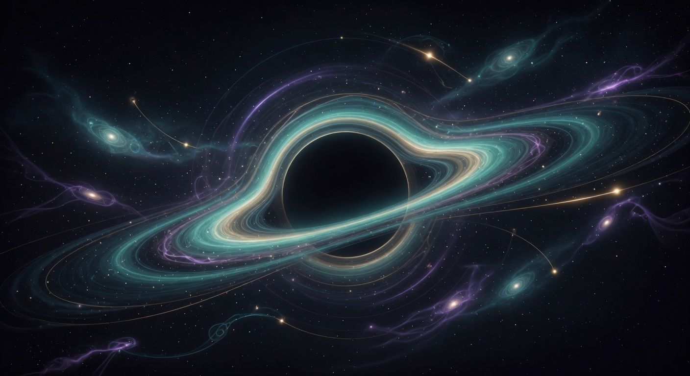

Black Holes, the End of Time, and the Ancient Art of Letting Form Go
7 min read • Full physics, Puranic pralaya, Kala, cross-pillar connections, and immersive practices
Imagine you are falling toward a supermassive black hole at the center of a galaxy. From far away, your colleagues watch your image slow down, redden, and eventually freeze at the invisible boundary called the event horizon. You never appear to cross it. Your last photons linger forever in their view, stretched into the infinite future.
But from your own frame, the crossing is uneventful at first. The horizon is not a wall of fire or a tangible surface for large black holes. It is a point of no return in the causal structure of spacetime. Once inside, all future light cones tilt inward. There is no trajectory that leads back out.
As you fall deeper, the tidal forces grow. For a stellar-mass black hole the stretching (spaghettification) would kill you before the horizon. For a supermassive one like Sagittarius A*, you can pass the horizon with only gentle gradients initially. The real violence happens very near the center.
Time behaves strangely. To a distant observer your clock slows without limit. To you, the outside universe ages at an ever-increasing rate. Stars exhaust their fuel, galaxies merge, the cosmic microwave background cools into nothing. The entire future of the universe can unfold during your final proper seconds as you approach the singularity.
In the coordinate systems used by distant observers (Schwarzschild coordinates), the horizon is at a fixed radius, but for the infaller it is crossed in finite time. The mathematics shows that the “freezing” is an artifact of the coordinate choice, not a physical barrier for the one falling in. This coordinate dependence is central to many paradoxes in black hole physics.
In 1974 Hawking showed that quantum fields near the horizon produce particles that escape to infinity as thermal radiation. The black hole loses mass and eventually evaporates. This is not controversial. What is deeply controversial is what this implies for the information that fell into the black hole.
Quantum mechanics is unitary — information is conserved. If the black hole evaporates completely into thermal radiation, the detailed information about what fell in appears lost. This is the black hole information paradox. It has driven decades of research in quantum gravity, holography, and the nature of spacetime itself.
Current leading ideas (as of 2026) include:
No consensus yet, but the direction is that information is not destroyed; our classical picture of the interior as a separate region that can be “lost” is incomplete.
The Puranas describe the end of a cosmic cycle (pralaya) in terms that feel eerily parallel. At the close of a kalpa, seven suns blaze simultaneously, the oceans evaporate, wind and fire consume the remains, and the three worlds are reduced to a single ocean. Then the subtle elements withdraw into the unmanifest.
Kala (Time) is repeatedly personified as the great devourer. In the Bhagavata Purana and Mahabharata, Kala is that which brings all beings — even the gods — to their appointed end. Yet this is not nihilistic. It is the necessary return so that a new cycle can emerge.
The structural similarity is striking: in both the black hole and pralaya, distinctions of form are erased. Matter and energy are compressed or dissolved beyond ordinary recognition. The question of whether “information” (in the modern sense) or the seeds of the next creation are preserved is left open in both pictures.
This is not an isolated mystery. In the deep exploration of the breathing cosmos, we saw how cyclic models replace a singular beginning with rhythmic bounces and aeons. A black hole can be viewed as a local, extreme version of the same process — a region where the future of one “aeon” is compressed and potentially seeds new structure.
In Worlds Without Number, the Puranic vision of innumerable Brahmandas finds a modern echo in the possibility that black holes themselves might spawn new universes (in some speculative models). The “countless worlds” are not only out there among the stars; they may be nested inside horizons.
The Rishis Who Measured the Stars cultivated attention across generations to track subtle regularities in the sky. Near a black hole, time dilation makes “generations” pass in what feels like moments to the infaller. The rishis’ patient, multi-kalpa gaze is the perfect counterpoint to the extreme time compression at the horizon.
Identify one major threshold you have crossed or are approaching (a diagnosis, a divorce, a career change, a profound loss, a spiritual awakening). Write two versions: (a) how it looks from “outside” (frozen, final, the end of the story), and (b) how it might feel once crossed (the outside world rushing forward, old forms dissolving). Sit with the difference.
Practice a 10–15 minute meditation where you deliberately slow your sense of time. Use breath or a mantra. At the end, reflect: what “future” rushed past while you were “inside” the practice? What old identifications dissolved?
Consider what “information” about you (memories in others, creations, DNA, stories) would survive your personal “evaporation.” What would be lost? The exercise is not morbid; it is clarifying. Many traditions suggest that what truly matters is never lost, only transformed.
Whether we speak in the language of Hawking radiation and islands or in the language of pralaya and the unmanifest, the message is similar: the most extreme compression and dissolution does not necessarily mean annihilation of all that was. Something is preserved or seeded for what comes next.
The black hole does not only destroy. In some models it may be a recorder or even a womb. The ancient view does not only mourn the end of a world — it prepares the ground for the next emergence.
Both invite the same human stance: meet the horizon with eyes open, knowing that endings are real and that the rhythm continues.
“When everything you thought was solid begins to stretch and the future rushes past faster than you can grasp, remember: even the universe practices this kind of surrender at its most extreme edges — and even there, something of what was may still be carried forward.”